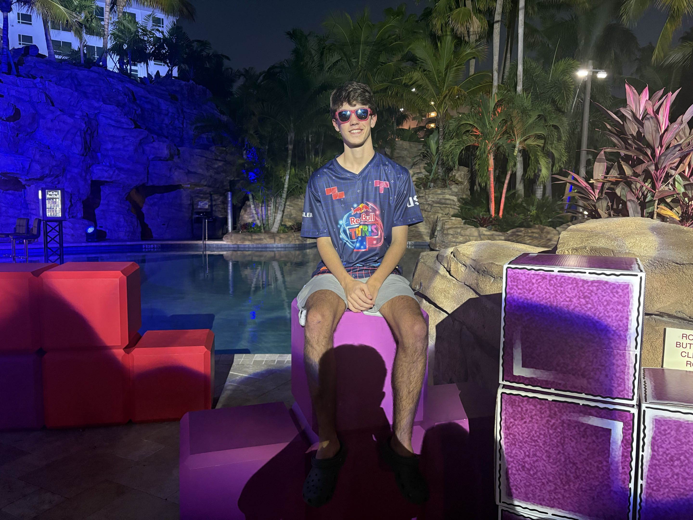

noah.dengler [at] tufts.edu · GitHub · LinkedIn

My name is Noah Dengler, and I am a sophomore computer science student at Tufts University. I have a passion for research, specifically in machine learning, and do research at Tufts in the Liu Lab, at the National Center for Supercomputing Applications, (NCSA), and am currently leading my own research at Tufts.
Working with Dr. Angela Lyons' group at the NCSA this past summer, I worked to use machine learning to model internal human migration in developing countries. By utilizing a graph neural network and a specialized spatial gate, we were able to create the Spatially-Gated Deep Graph neural network (SGDG) in order to capture both spatial entanglement of migration data and relationships between climate, income, and migration while also improving on predictive performance. I am still working with her team today, hoping to use these models to uncover the causes of human migration in Brazil.
Working with Dr. Liu and his group at Tufts, we are working on evaluating physics-based subseasonal-to-seasonal (S2S) weather forecasting models' ability to forecast extreme events like hurricanes, heatwaves, etc. By creating a dataset of extreme events that are based on the same coarse data that these models forecast, we are able to create fairer evaluations that are implicit in the weather data, presenting a gain in the ability to create new models more efficiently.
I am currently working on a project involving one of my biggest interests in ML: sparsity! By using dynamic sparse training (DST) we can maintain the same performance in accuracy with less than 1% of the connections! I am currently working to study the emergent behavior of the sparse topologies that are produced by various DST methods. I am also interested in the applications of DST under fully homomorphic encryption, where the advantages of sparsity may be more practical because of the differing cost model of FHE.
SUPAMINES (the Self-SUPervised-Attention-based MINo inferencE System) is one of my ML passion projects. Utilizing PPO on a transformer and a lagrangian constraint, this model uses the transformer architecture and novel reward system to match the current best model, BetaTetris, with only a quarter of the parameters! You can download and watch the model play for yourself, or view the demo here.
Aside from research, I like doing other things! I also play Tetris competitively. notable achievements include: